Memory, Views & Copies
Demystifying NumPy's memory buffer architecture, shared views vs independent copies, basic slicing vs advanced indexing, .base tracking, shares_memory(), reshaping nuances, and memory-safe preprocessing.
📋 Table of Contents • Learning Roadmap
Is masterclass lesson mein hum NumPy ke memory architecture aur View vs Copy ke complete lifecycle ko explore karenge:
arr.view() & Shared Data)
C. What is a Copy? (arr.copy() & Independence)
D. View vs Copy: Direct Comparison Table
E. Slicing & Shared Memory (1D & 2D Slices)
F. Advanced Indexing & Copies (Fancy & Boolean)
G. Understanding .base & Ownership Traps
H. shares_memory() vs may_share_memory()
I. reshape(), ravel(), flatten(), astype()
J. Contiguous Arrays & Memory Strides
K. Views, Copies & Image Processing
L. Memory Efficiency & Large Array Retention Trap
M. 17 Common Traps & 8 Debugging Scenarios
N. Complete Memory Operations Taxonomy Map
O. 39 Practice Questions & Interactive Solutions
P. Capstone Mini-Project: Memory Detective
Q. Summary & Production Cheatsheet
📋 0. Engaging Introduction • The Photocopy Analogy
Imagine kijiye ek teacher ke paas students ka ek official, signed Original Marksheet Document hai.
-
VIEW (Glass Window Analogy): Agar teacher marksheet ko ek glass window ke peeche chipka de aur doosre teachers se bole ki "Aap window se marks dekh sakte hain", to window ke through dekhne wala person original document ko hi dekh raha hai. Agar koi window kholkar original page par pen se
85ko99bana de, to window se dekhne wale har person ko naya number99hi dikhega! Isse hum View kehte hain — naya dekhne ka nazariya (perspective), lekin data wahi ek shared page par hai! -
COPY (Photocopy Machine Analogy): Ab imagine kijiye teacher ne us document ki Xerox/Photocopy machine se ek independent photocopy nikaal kar apne assistant ko de di. Assistant ne photocopy par kisi student ke marks par pen chala kar
99kar diya. Kya school ke principal ke paas rakhe original document par koi fark padega? Bilkul nahi! Photocopy ka paper aur ink alag hai, aur original ka paper alag hai! Isse hum Copy kehte hain!
- Dataset Preprocessing: Raw benchmark dataset ko normalize karte waqt agar aapne galti se View par math kar diya, to aapka original ground-truth dataset corrupt ho jayega.
- Computer Vision & Image Processing: 4K image mein se face crop karte waqt View use karne se memory fast rehti hai, lekin face blur karne par original image ka face bhi blur ho sakta hai!
- RAM Management: 10 GB ke array ka chhota sa hissa slice karke agar aapne use retain kiya, to View ki wajah se poora 10 GB RAM mein lock ho sakta hai!
A Tiny First Example: Seeing View and Copy in Action
Chaliye ek real Python script execute karke is behavior ko observe karte hain:
import numpy as np original = np.array([10, 20, 30, 40, 50]) # Ek view aur ek independent copy create karte hain view_data = original.view() copy_data = original.copy() # View ke first element ko modify karte hain view_data[0] = 999 print("Original: ", original) print("View: ", view_data) print("Copy: ", copy_data)
Notice kijiye! Humne original[0] = 999 nahi likha tha, humne sirf view_data[0] = 999 kiya tha. Phir bhi original array ka pehla number badal kar 999 ho gaya! Jabki copy_data abhi bhi safe aur intact 10 hai.
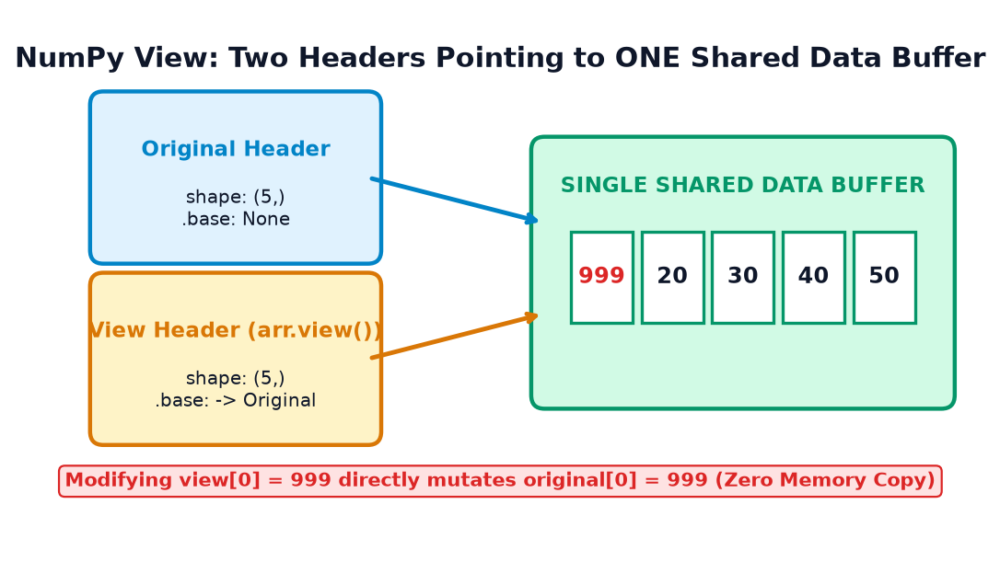
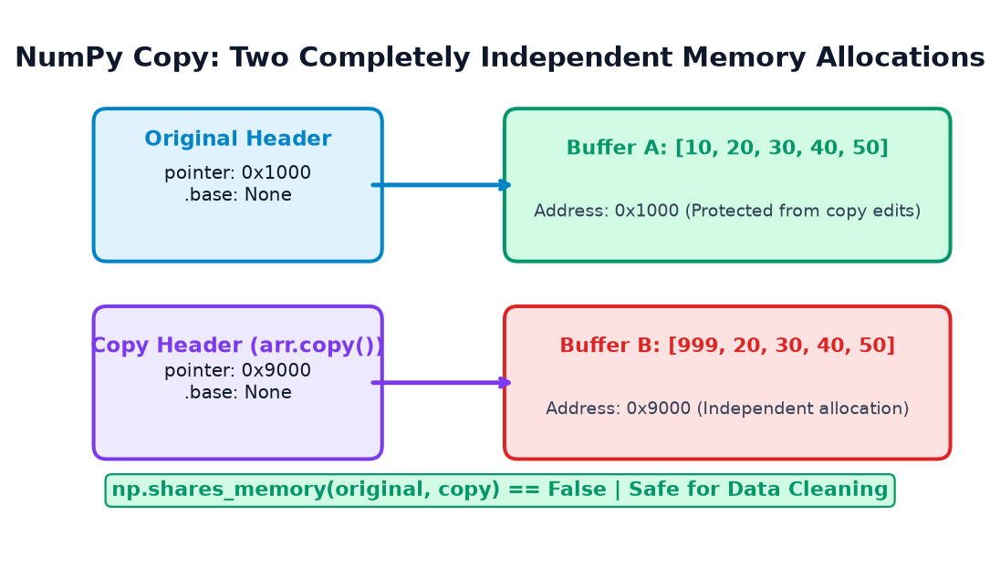
🖥️ A. How NumPy Arrays Use Memory
NumPy arrays Python lists se 50x se 100x faster kyun hote hain? Answer hai: Memory Architecture. Python list har element ke liye alag se full Python integer object aur memory pointer allocate karti hai. Iske opposite, ek NumPy array do parts mein divide hota hai:
- Array Header (Metadata in Python Object): Chhota sa structure jo array ki shape, data type (dtype), strides, aur buffer memory address hold karta hai.
- Data Buffer (Raw Continuous Memory in C/RAM): Ek single block of memory jisme saare numbers ek ke baad ek tightly packed binary form mein store hote hain.
arr.nbytes: Array ke data buffer ke elements dwara occupy kiye gaye actual bytes ka count (e.g. 4 numbers of 32-bit = 16 bytes).arr.shape: Array ke dimensions ka tuple (e.g.(2, 3)).arr.dtype: Element ka byte size aur type (e.g.int32,float64).arr.strides: Next element ya next row par pahunchne ke liye computer ko RAM mein kitne Bytes aage jump karna padta hai.arr.flags.c_contiguous: Kya memory elements row-wise C-style continuous block mein hain?
Example 1: Inspecting a 1D Array's Memory Anatomy
import numpy as np # 4 integers of 32-bit (each int32 takes 4 bytes) arr = np.array([10, 20, 30, 40], dtype=np.int32) print("Array:", arr) print("Shape:", arr.shape) print("Data type:", arr.dtype) print("Element memory (nbytes):", arr.nbytes, "bytes") print("Strides:", arr.strides) print("C-contiguous:", arr.flags.c_contiguous)
Calculation: 4 elements × 4 bytes per int32 = 16 bytes. Strides (4,) ka matlab hai agle element par jump karne ke liye CPU ko RAM mein 4 bytes aage scroll karna hai.
Example 2: 2D Matrix Memory Layout & Row Jump Strides
import numpy as np # 2 rows x 3 columns of int32 matrix = np.array( [[1, 2, 3], [4, 5, 6]], dtype=np.int32 ) print("Matrix:\n", matrix) print("Shape:", matrix.shape) print("Strides:", matrix.strides) print("Element memory:", matrix.nbytes, "bytes") print("C-contiguous:", matrix.flags.c_contiguous)
Decoding Strides (12, 4):
• 12 bytes: Next row (Row 0 se Row 1) par jump karne ke liye 3 columns × 4 bytes = 12 bytes move karna padega!
• 4 bytes: Same row ke andar next column par jump karne ke liye 4 bytes move karna padega!
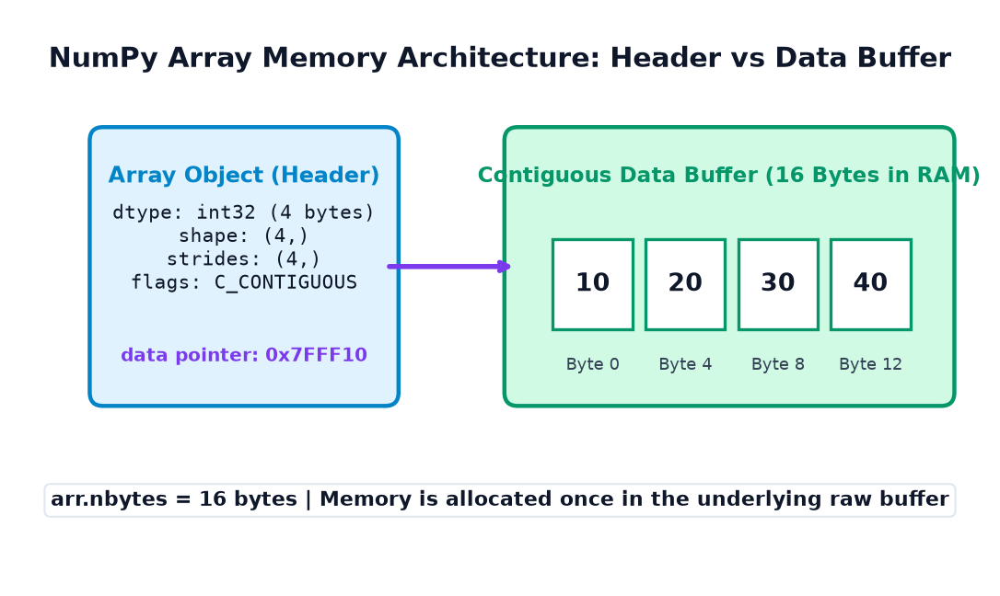
👁️ B. What is a View?
Ek View ek naya NumPy array object hota hai jo kisi doosre array ke sath wahi same underlying data buffer share karta hai.
- View ka apna alag Header (shape, strides) ho sakta hai, lekin uska data pointer original array ke memory buffer ko point karta hai.
- Jab aap
arr.view()call karte hain, to koi naya data copy nahi banta — isliye yehO(1)instantaneous operation hota hai chahe array 100 GB ka kyun na ho! - View mein kiye gaye updates turant original array mein reflect hote hain.
Example 1: Modifying Values Through a View
import numpy as np original = np.array([100, 200, 300, 400]) view_data = original.view() # Modify index 1 through view view_data[1] = 999 print("Original:", original) print("View: ", view_data) print("Do they share memory?:", np.shares_memory(original, view_data))
Example 2: A View with a Different Shape
Kyunki View ka Header independent hota hai, hum original array ko chhue bina View ka dimension change kar sakte hain:
import numpy as np original = np.arange(1, 7) # 1D array of 6 elements # Modern recommended way to create a reshaped view view_2d = original.view().reshape(2, 3) print("Original shape:", original.shape) print("View shape: ", view_2d.shape) print("View 2D Array:\n", view_2d) print("Shares memory?:", np.shares_memory(original, view_2d))
view.shape = (2, 3) direct assignment par deprecation warning aati hai. Modern production standard hai view.reshape(2, 3) use karna jo automatically view return karta hai bina data copy kiye.
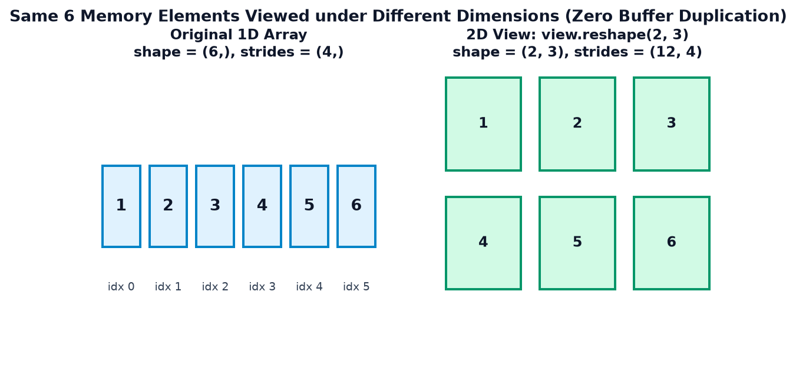
📋 C. What is a Copy?
Jab aap arr.copy() call karte hain, to NumPy RAM mein ek poori nayi memory allocation karta hai aur original array ke saare elements ko us nayi memory mein clone kar deta hai.
- Naye array ke paas apna independent data buffer hota hai.
- Copy mein kiya gaya koi bhi change original array ko chhu bhi nahi sakta.
- Cost: Copy banane mein memory aur CPU time dono lagte hain (bade arrays ke liye $O(N)$ memory cost).
- Object Dtype Nuance: Dhyaan rahe ki
.copy()numeric arrays ke liye true independent copy hoti hai, lekin agar arraydtype=objecthai (jisme arbitrary Python objects ya dictionaries store hain), to yeh shallow copy hoti hai (Python objects ke pointers clone hote hain).
Example 1: Modifying an Independent Copy
import numpy as np original = np.array([10, 20, 30, 40]) copied = original.copy() # Modify the copy copied[0] = 999 print("Original: ", original) print("Copied Array: ", copied) print("Shares memory?:", np.shares_memory(original, copied))
Example 2: Protecting Raw Student Records Before ML Preprocessing
import numpy as np # Benchmark exam scores (Original ground truth data) raw_marks = np.array([85, 92, 78, 45, 90]) # Step 1: Explicit copy to guarantee safety cleaned_marks = raw_marks.copy() # Step 2: Impute failing marks (< 50) with grace mark of 50 cleaned_marks[cleaned_marks < 50] = 50 print("Original Raw Records (Intact):", raw_marks) print("Cleaned Dataset (Processed): ", cleaned_marks)
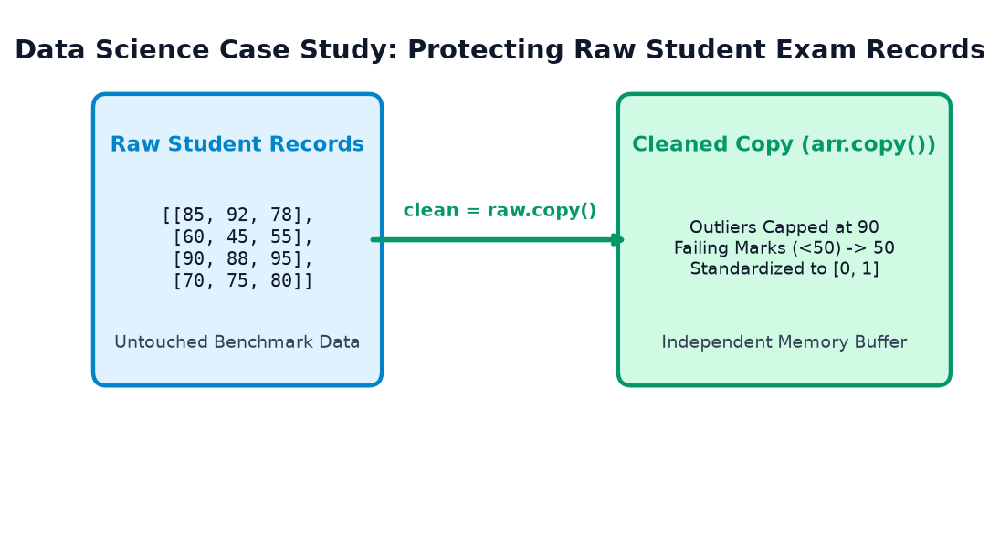
raw.copy() ensures benchmark records stay untouched during data cleaning.⚖️ D. View vs Copy: Direct Comparison
NumPy code likhte waqt View aur Copy ke differences ko samajhna runtime bugs aur memory bloat se bachata hai:
| Property | View | Copy |
|---|---|---|
| Element Memory Buffer | Shared directly with source array | Brand new, independent allocation in RAM |
| Modifications | Mutates original source array! | Zero impact on original source array |
| RAM Overhead | O(1) (Zero extra element storage) |
O(N) (Allocates full duplicate size) |
| Creation Speed | Instantaneous (Nanoseconds) | Depends on array size (Microseconds to Seconds) |
.base Attribute |
Points to source array (or memory owner) | None (It owns its own memory) |
| Typical Use Case | Fast reading, slicing, math transformations | Data cleaning, pipeline isolation, caching |
| Primary Engineering Risk | Accidental mutation of source data | High memory consumption (OutOfMemory errors) |
Example 1: Three Arrays, Three Roles
import numpy as np orig = np.array([1, 2, 3]) v = orig.view() c = orig.copy() # Modify copy -> Only copy changes c[0] = 100 print("After c[0]=100 -> orig:", orig, "| copy:", c) # Modify view -> Both view and orig change v[1] = 200 print("After v[1]=200 -> orig:", orig, "| view:", v)
Example 2: Same Values Do NOT Imply Shared Memory
import numpy as np a = np.array([10, 20, 30]) b = a.copy() print("Are array values equal? (array_equal):", np.array_equal(a, b)) print("Do arrays share memory? (shares_memory):", np.shares_memory(a, b))
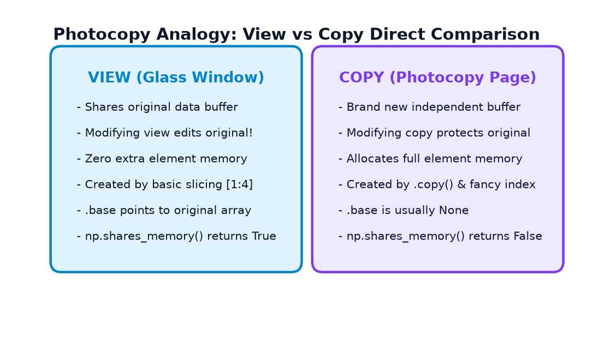
✂️ E. Slicing and Shared Memory
Python standard lists mein slicing (e.g. my_list[1:4]) hamesha ek naya copy banati hai.
Lekin NumPy mein efficiency ke liye Basic Slicing hamesha ek VIEW return karti hai!
py_list = [1, 2, 3] sub = py_list[1:] sub[0] = 999 # py_list is STILL [1, 2, 3] (List slicing copies!)NumPy array ka behavior:
np_arr = np.array([1, 2, 3]) sub = np_arr[1:] sub[0] = 999 # np_arr BECOMES [1, 999, 3] (NumPy slicing creates a VIEW!)
Example 1: 1D Array Slicing
import numpy as np arr = np.array([10, 20, 30, 40, 50, 60]) # Basic slice [1:4] -> picks elements at index 1, 2, 3 part = arr[1:4] print("Original before slice edit:", arr) print("Slice content: ", part) print("Shares memory? ", np.shares_memory(arr, part)) # Modify the slice part[0] = 999 print("Original AFTER slice edit: ", arr)
Example 2: 2D Matrix Row and Column Slicing
import numpy as np matrix = np.array([ [10, 20, 30], [40, 50, 60], [70, 80, 90] ]) row_view = matrix[0, :] # First row col_view = matrix[:, 1] # Second column block_view = matrix[0:2, 1:3] # 2x2 submatrix print("Row view shares memory? :", np.shares_memory(matrix, row_view)) print("Col view shares memory? :", np.shares_memory(matrix, col_view)) print("Block view shares memory?:", np.shares_memory(matrix, block_view)) # Modifying row_view[0] edits matrix[0, 0] row_view[0] = 111 print("Matrix after row_view[0] = 111:\n", matrix)
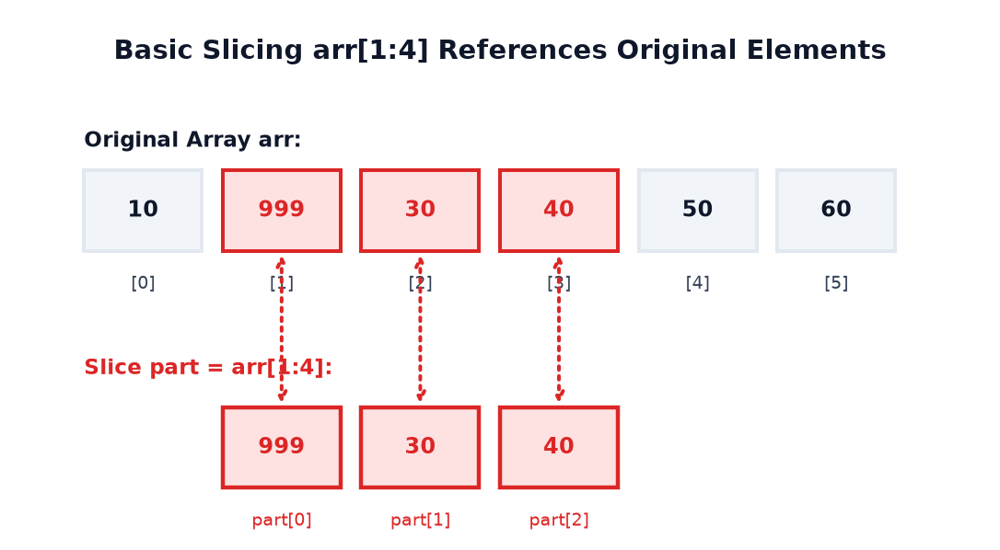
🔍 F. Advanced Indexing • Why It Always Returns a Copy
NumPy indexing mein ek bohot bada fundamental rule hai jo har beginner ko memorize karna chahiye:
- Basic Slicing (
arr[start:stop:step]): Returns a VIEW (shares original memory buffer). - Advanced Indexing (Integer array
arr[[0, 2, 4]]& Boolean maskarr[arr > 50]): Returns a COPY (independent new allocation).
Aisa kyun hota hai? (Why does Advanced Indexing create a Copy?):
Jab aap basic slice karte hain jaise arr[::2], to elements ke beech ka gap constant (uniform stride) hota hai. NumPy array metadata mein sirf ek single stride number change karke same memory buffer ko represent kar sakta hai.
Lekin jab aap arbitrary indices pass karte hain jaise arr[[0, 4, 1]], ya condition se select karte hain jaise scores[scores > 70], to selected elements memory mein kisi fixed mathematical stride par nahi hote! NumPy ke paas unhe ek naye contiguous buffer mein copy karke naya array banane ke alawa koi mathematical rasta nahi hota!
Example 1: Integer-Array (Fancy) Indexing Creates an Independent Copy
import numpy as np arr = np.array([10, 20, 30, 40, 50]) # Non-consecutive elements choose karte hain integer array se selected = arr[[0, 2, 4]] print("Original array :", arr) print("Selected elements :", selected) print("Shares memory? :", np.shares_memory(arr, selected)) # Modify selected array element selected[0] = 999 print("Selected after edit :", selected) print("Original after edit :", arr)
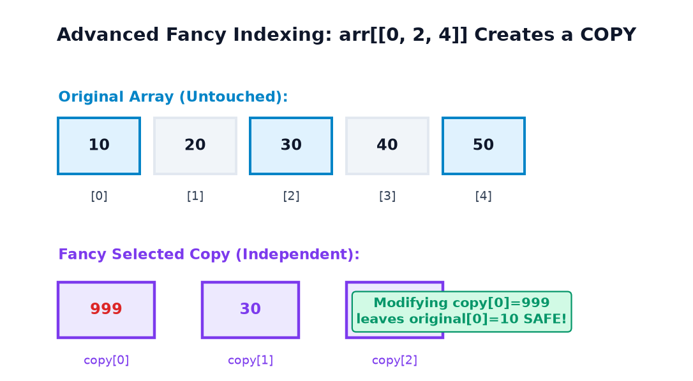
Example 2: Boolean-Mask Filtering vs Boolean Assignment
Yahan students aksar confuse hote hain: Boolean mask se extract karna copy banata hai, lekin Boolean mask se assign karna original ko in-place modify karta hai!
import numpy as np scores = np.array([35, 72, 88, 41, 95, 60]) # 1. Extraction: selected creates a brand new copy! selected = scores[scores >= 70] print("All scores :", scores) print("Selected scores (>=70):", selected) print("Shares memory? :", np.shares_memory(scores, selected)) # Modifying selected array does NOT touch scores selected[0] = 0 print("Original after selected[0] = 0:", scores) # 2. In-place Assignment: Directly mutates scores via __setitem__! scores[scores < 50] = 50 # Grace marks: 35 and 41 become 50 print("Original after scores[scores < 50] = 50:\n", scores)
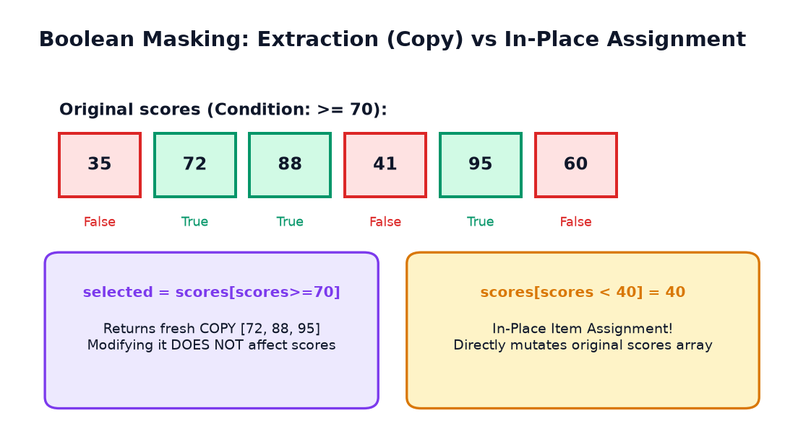
🕵️ G. Understanding .base • Inspection & Ownership Traps
NumPy arrays ke paas ek built-in attribute hota hai: arr.base. Iska kaam hai batana ki array ka memory buffer kiska hai:
- Agar array apni memory khud own karta hai (jaise fresh
np.array()yaarr.copy()), to uska.basehota haiNone. - Agar array kisi doosre array ka View hai, to uska
.baseus parent object ko point karega jahan se memory share ho rahi hai.
.base is None is NOT a Universal Proof of Sharing!
- Intermediate Base Chains: Agar aapne slice ka slice banaya (
sub_slice = slice2[0:2]), tosub_slice.basezaroori nahi kislice2ho — woh seedhe root original array ko point kar sakta hai! - Different Views sharing memory: Do sibling views
v1 = arr[::2]aurv2 = arr[1::2]dono ka.base is arrhoga, lekinv1.base is v2hameshaFalsehoga! - External Memory: Agar array memory kisi C-extension buffer ya memoryview se aayi hai, to
.basekoi Python buffer object hoga, NumPy array nahi!
np.shares_memory(a, b) use karein, .base equality nahi!
Example 1: Inspecting .base on Views vs Copies
import numpy as np original = np.array([100, 200, 300, 400]) view_arr = original.view() slice_arr = original[1:3] copy_arr = original.copy() print("original.base :", original.base) print("view_arr.base is orig:", view_arr.base is original) print("slice_arr.base is orig:", slice_arr.base is original) print("copy_arr.base :", copy_arr.base) print("copy_arr.base is None:", copy_arr.base is None)
Example 2: Multi-Level Slicing & Intermediate Base Chain
import numpy as np grandparent = np.arange(10) parent_slice = grandparent[2:8] # [2, 3, 4, 5, 6, 7] child_slice = parent_slice[1:4] # [3, 4, 5] print("child_slice.base is parent_slice? :", child_slice.base is parent_slice) print("child_slice.base is grandparent? :", child_slice.base is grandparent) print("np.shares_memory(grandparent, child) :", np.shares_memory(grandparent, child_slice)) print("np.shares_memory(parent, child) :", np.shares_memory(parent_slice, child_slice))
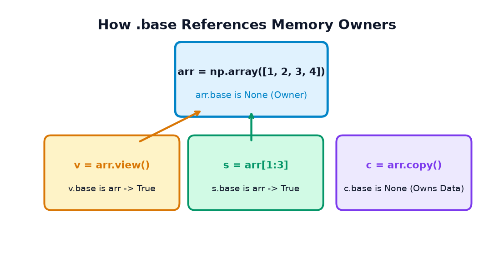
⚖️ H. np.shares_memory() vs np.may_share_memory()
NumPy do special functions provide karta hai memory overlap check karne ke liye:
| Function | Check Type | Algorithmic Cost | Accuracy | Typical Use Case |
|---|---|---|---|---|
np.shares_memory(a, b) |
Exact element-level overlap check | Higher: solves multi-dimensional linear Diophantine equations | 100% Exact: Returns True only if at least one memory byte is shared |
Unit tests, assertions, mission-critical safety checks |
np.may_share_memory(a, b) |
Heuristic (Bounds) overlap check | Fast: checks if memory address intervals [min, max] overlap |
Conservative: Can return True even if elements never overlap! |
NumPy internal routines, quick heuristic before deciding in-place vs copy |
Example 1: View vs Copy Verification
import numpy as np orig = np.array([1, 2, 3, 4]) view_arr = orig.view() copy_arr = orig.copy() print("--- VIEW ---") print("shares_memory(orig, view) :", np.shares_memory(orig, view_arr)) print("may_share_memory(orig, view) :", np.may_share_memory(orig, view_arr)) print("--- COPY ---") print("shares_memory(orig, copy) :", np.shares_memory(orig, copy_arr)) print("may_share_memory(orig, copy) :", np.may_share_memory(orig, copy_arr))
Example 2: The Strided Slices Counterexample (Where they disagree!)
Dekhiye ek classic case jahan may_share_memory() aur shares_memory() opposite result dete hain:
Array arr = np.arange(10) se do slices lijiye:
even = arr[0::2]→[0, 2, 4, 6, 8]odd = arr[1::2]→[1, 3, 5, 7, 9]
shares_memory() returns False.Lekin dono ka memory address range
[arr[0], arr[9]] ke andar hai! Isliye may_share_memory() returns True!
import numpy as np arr = np.arange(10) even_slice = arr[0::2] # [0, 2, 4, 6, 8] odd_slice = arr[1::2] # [1, 3, 5, 7, 9] print("Even slice:", even_slice) print("Odd slice :", odd_slice) print("shares_memory(even, odd) :", np.shares_memory(even_slice, odd_slice)) print("may_share_memory(even, odd) :", np.may_share_memory(even_slice, odd_slice))
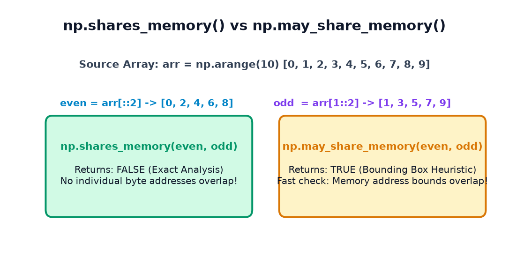
🔄 I. reshape(), ravel(), flatten() & astype()
Students aksar assume karte hain ki reshaping hamesha copy karti hai ya hamesha view banati hai. Sach yeh hai ki behavior memory layout (contiguity) par depend karta hai!
| Method | Return Type | Condition for View | When it Copies |
|---|---|---|---|
arr.reshape() |
View OR Copy | Jab array C-contiguous ho (ya compatible strides ho) | Jab array non-contiguous slice ho jise new shape mein represent karne ke liye memory rearrange karni pade |
arr.ravel() |
View OR Copy | Whenever possible (array contiguous ho) | Only when array memory non-contiguous ho (Fortran order slice without transpose compatibility) |
arr.flatten() |
ALWAYS COPY | Never returns a view! Guaranteed independent copy. | Always allocates a brand new 1D buffer. |
arr.astype(dtype) |
Normally COPY | Only if copy=False AND dtype exactly matches current dtype |
Whenever element data type convert hota hai (e.g., int32 to float64) |
Example 1: ravel() vs flatten() Demonstration
import numpy as np matrix = np.arange(1, 7).reshape(2, 3) ravelled = matrix.ravel() flattened = matrix.flatten() print("Matrix:\n", matrix) print("Ravelled :", ravelled) print("Flattened:", flattened) print("Ravel shares memory? :", np.shares_memory(matrix, ravelled)) print("Flatten shares memory?:", np.shares_memory(matrix, flattened)) # Modify ravelled element -> affects matrix ravelled[0] = 888 print("Matrix after ravelled[0] = 888:\n", matrix) # Modify flattened element -> does NOT affect matrix flattened[1] = 999 print("Matrix after flattened[1] = 999:\n", matrix)
Example 2: When reshape() Forces a Copy & astype() Conversion
import numpy as np # Contiguous array base = np.arange(12).reshape(3, 4) # Transpose creates a non-contiguous Fortran-ordered layout transposed = base.T print("Transposed C-contiguous:", transposed.flags.c_contiguous) # Reshaping non-contiguous array into 1D forces NumPy to COPY! reshaped_1d = transposed.reshape(12) print("Reshaped 1D shares memory?:", np.shares_memory(transposed, reshaped_1d)) # astype() converts int to float -> always fresh allocation float_arr = base.astype(np.float64) print("astype(float64) shares memory?:", np.shares_memory(base, float_arr))
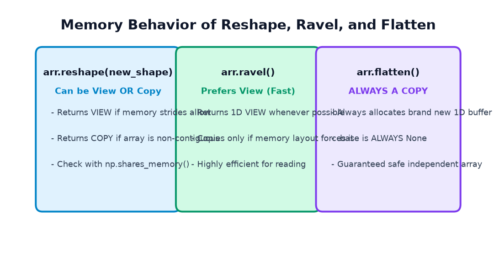
🧱 J. Contiguous Arrays & Memory Strides • The Engine Behind Views
NumPy arrays computer RAM mein linear 1D memory blocks hote hain. Phir 2D ya 3D indexing kaise kaam karti hai? Strides ke jariye!
- Strides Tuple: Har dimension mein agle element tak pahunchne ke liye kitne bytes jump karne hain.
- C-Contiguous (Row-Major): Elements row-by-row consecutive memory addresses par store hote hain. Last index fastest move karta hai.
- Fortran-Contiguous (Column-Major): Elements column-by-column store hote hain. First index fastest move karta hai.
- Non-Contiguous Slices: Step slicing (e.g.,
arr[::2]) strides ko double kar deta hai, isliye elements memory mein door-door hote hain lekin view banaye rakhte hain!
Example 1: 1D Full Array vs Strided Slice
import numpy as np arr = np.arange(12, dtype=np.int32) every_second = arr[::2] print("Original array :", arr) print("Strided slice (::2) :", every_second) print("Original strides :", arr.strides) print("Slice strides :", every_second.strides) print("Original C-contiguous:", arr.flags.c_contiguous) print("Slice C-contiguous :", every_second.flags.c_contiguous) print("Shares memory? :", np.shares_memory(arr, every_second))
Example 2: 2D Matrix Column Slice • Strided Memory Layout
import numpy as np # 3x3 matrix of int32 (4 bytes each) mat = np.arange(1, 10, dtype=np.int32).reshape(3, 3) # Column 1 select karte hain: [2, 5, 8] col = mat[:, 1] print("Matrix:\n", mat) print("Column 1 values :", col) print("Matrix shape :", mat.shape) print("Matrix strides :", mat.strides) print("Col shape :", col.shape) print("Col strides :", col.strides) print("Col C-contiguous? :", col.flags.c_contiguous) print("Shares memory? :", np.shares_memory(mat, col))
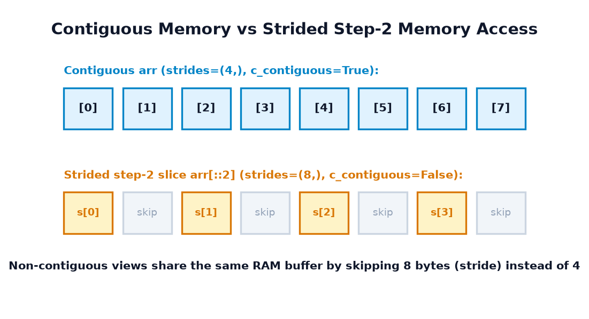
🖼️ K. Views, Copies & Image Processing • Computer Vision Realities
Digital images NumPy mein 3-dimensional arrays hote hain jinka shape (Height, Width, Channels) hota hai (e.g., RGB images mein 3 channels: Red, Green, Blue hote hain).
Jab hum image processing ya computer vision algorithms (jaise OpenCV ya PyTorch) likhte hain, to memory management aur Views vs Copies ka behavior samajhna performance aur correctness ke liye critical hota hai!
- Agar aap face detection ke baad image ka face crop karte hain:
face_roi = image[y1:y2, x1:x2], to yeh ek View hai! - Fayda: Zero memory copy — image kitni bhi badi ho, slice instant banta hai!
- Khatra: Agar aapne
face_roipar koi filter ya bounding box draw kiya, to original raw photo ke pixels permanent mutate ho jayenge!
Example 1: Modifying an Image Region Through a View
import numpy as np # 6x6 Synthetic RGB image banate hain (values 0-255 uint8) image = np.zeros((6, 6, 3), dtype=np.uint8) image[:, :, :] = 200 # Light gray background # 2x2 Region of Interest (ROI) slice karte hain (top-left corner) roi_view = image[1:3, 1:3] print("ROI shares memory with Image?:", np.shares_memory(image, roi_view)) # ROI ke pixels ko Pure Red ([255, 0, 0]) set karte hain roi_view[:, :] = [255, 0, 0] print("Original image pixel at (1, 1):", image[1, 1]) print("Original image pixel at (0, 0):", image[0, 0])
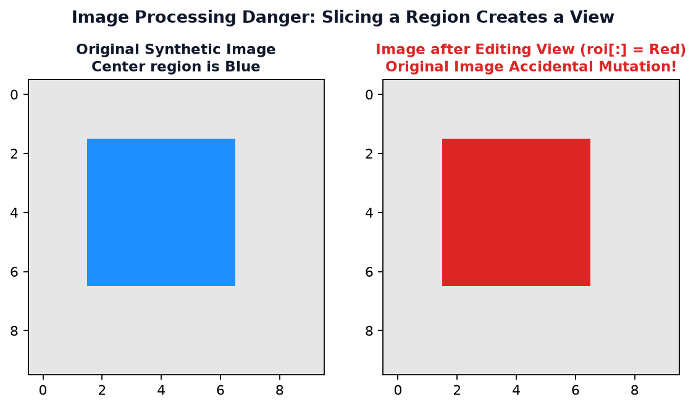
Example 2: Protecting the Original Image via Copy
import numpy as np raw_photo = np.full((6, 6, 3), 150, dtype=np.uint8) # Safe ROI: Explicit copy create karte hain safe_crop = raw_photo[2:5, 2:5].copy() print("Safe crop shares memory?:", np.shares_memory(raw_photo, safe_crop)) # Safe crop par annotations draw karte hain (Green: [0, 255, 0]) safe_crop[:, :] = [0, 255, 0] print("Safe crop pixel (0,0) :", safe_crop[0, 0]) print("Raw photo pixel (2,2) :", raw_photo[2, 2]) # Untouched!
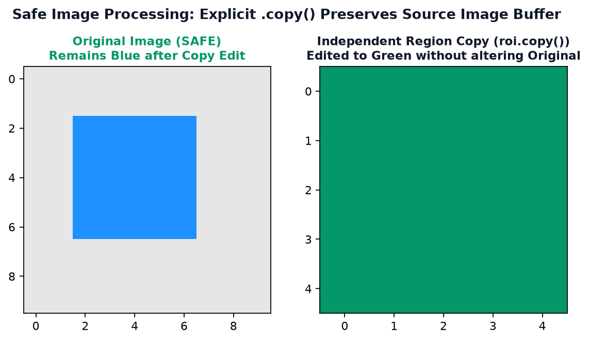
⚡ L. Memory Efficiency & Practical Performance • The Large Array Retention Trap
NumPy ke views memory optimize karne ke liye design kiye gaye the taaki 10 GB ke dataset ka slice lene par doosra 10 GB allocate na ho. Lekin yeh feature ek bohot khatarnak Memory Leak Trap bhi ban sakta hai!
Maan lijiye aapne 1 GB ka giant array load kiya aur usme se sirf 1 row ya 1 element slice kar liya:
huge_dataset = np.ones((100000000,), dtype=np.int64) # ~800 MB RAM summary_point = huge_dataset[0:1] # Slice View! del huge_dataset # Parent ko delete kiya
Aapko lagta hai ki 800 MB memory free ho gayi? BILKUL NAHI!
Kyunki summary_point.base abhi bhi us giant 800 MB memory buffer ko point kar raha hai! Python ka Garbage Collector us 800 MB buffer ko tab tak RAM se nahi mita sakta jab tak summary_point zinda hai!
Fix (Solution): Agar aapko bade dataset me se sirf chhota sa summary slice rakhna hai, to hamesha .copy() use karein:
summary_point = huge_dataset[0:1].copy() # Independent 8 bytes! del huge_dataset # Ab poora 800 MB garbage collect ho jayega!
Example 1: Buffer Sharing vs Element Storage (nbytes vs Reality)
import numpy as np # 1 million integers (int64 = 8 bytes each -> 8,000,000 bytes ~ 8 MB) large_arr = np.arange(1_000_000, dtype=np.int64) view_arr = large_arr.view() copy_arr = large_arr.copy() print("large_arr nbytes :", large_arr.nbytes, "bytes") print("view_arr nbytes :", view_arr.nbytes, "bytes") print("copy_arr nbytes :", copy_arr.nbytes, "bytes") print("view shares memory?:", np.shares_memory(large_arr, view_arr)) print("copy shares memory?:", np.shares_memory(large_arr, copy_arr))
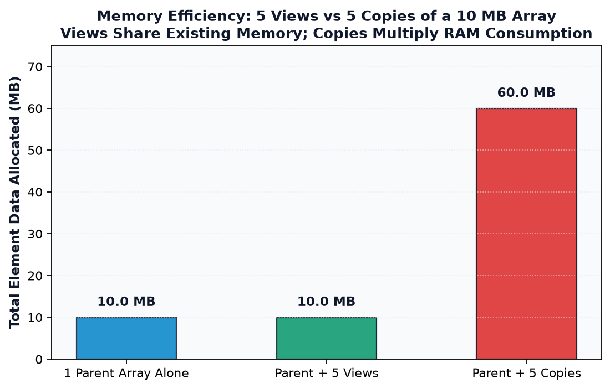
🐛 M. 17 Common Traps & 8 Hands-On Debugging Scenarios
NumPy memory management mein beginners aur intermediate developers in 17 traps mein sabse zyada phasate hain:
- Assuming every slice is an independent copy (Modifying slice corrupts parent).
- Assuming every indexing operation returns a view (Fancy & Boolean indexing copy data).
- Modifying a view and accidentally altering raw experimental benchmark data.
- Assuming
.copy()and.view()are interchangeable. - Assuming
.basealways points directly to the immediate parent variable. - Assuming
.base is Nonealone proves two arrays do not share memory. - Confusing
shares_memory()(exact) withmay_share_memory()(heuristic). - Assuming
reshape()always returns a view (Fails on non-contiguous memory). - Assuming
ravel()always returns a copy or always returns a view. - Forgetting that
flatten()ALWAYS creates a brand new copy. - Assuming
astype()preserves memory sharing (Dtype change always allocates fresh memory). - Assuming
nbytesreports the full Python process memory consumption. - Modifying a filtered boolean extraction array and expecting original array to change.
- Accidentally corrupting raw training data during machine learning normalization.
- Shuffling aligned dataset arrays incorrectly using views instead of synchronized copies.
- Assuming a read-only view (
arr.flags.writeable = False) can be modified. - Assuming
.copy()does a deep recursive copy on Python object-dtype arrays.
8 Hands-On Debugging Case Studies (Real Verified Scenarios)
Scenario 1: Accidental Parent Array Mutation via Basic Slicing
# BUG: Developer wants to normalize only a subset of scores without touching original raw scores raw_scores = np.array([50.0, 60.0, 70.0, 80.0]) subset = raw_scores[0:2] subset += 10.0 # Intended local adjustment print("Original scores corrupted:", raw_scores) # [60.0, 70.0, 70.0, 80.0]
Root Cause: raw_scores[0:2] basic slicing hai jo view return karta hai. In-place addition (+=) original buffer ke elements ko overwrite kar deta hai.
# FIX: Explicitly call .copy() to decouple memory raw_scores = np.array([50.0, 60.0, 70.0, 80.0]) subset = raw_scores[0:2].copy() subset += 10.0 print("Raw scores preserved :", raw_scores) print("Subset adjusted safely :", subset)
Scenario 2: Expecting Boolean Filter Extraction to Mutate Original
# BUG: Developer attempts to cap negative numbers to 0 vals = np.array([12, -5, 8, -3, 15]) negatives = vals[vals < 0] negatives[:] = 0 # Modifying the extracted array print("Original vals unchanged!:", vals) # Still contains negative numbers!
Root Cause: vals[vals < 0] creates a new independent copy. Modifying negatives only changes the throwaway copy.
# FIX: Assign directly to the original array using Boolean mask indexation vals = np.array([12, -5, 8, -3, 15]) vals[vals < 0] = 0 # Direct in-place mutation via __setitem__ print("Correctly zeroed array :", vals)
Scenario 3: Assuming reshape() Always Returns a View
# BUG: Developer assumes reshaping transposed matrix will mutate original mat = np.arange(6).reshape(2, 3) trans_flat = mat.T.reshape(6) trans_flat[0] = 999 print("Original matrix unchanged!:", mat[0, 0]) # Still 0!
Root Cause: mat.T is non-contiguous in row-major order. Calling .reshape(6) on it forces NumPy to create an independent copy.
# FIX: Explicitly test memory sharing or mutate indices on original mat = np.arange(6).reshape(2, 3) print("Does trans_flat share memory?:", np.shares_memory(mat, mat.T.reshape(6))) # Mutate original matrix coordinates directly mat[0, 0] = 999 print("Matrix updated correctly :\n", mat)
Scenario 4: Zombie Array Leak • Retaining a Slice of a Large Array
# BUG: Keeping a 1-element slice view keeps huge array alive in RAM def get_first_entry(): giant_arr = np.ones(10_000_000, dtype=np.int64) # 80 MB return giant_arr[0:1] # Returns a VIEW! giant_arr buffer cannot be freed! first = get_first_entry() print("first.base still holds giant array:", first.base.nbytes, "bytes")
Root Cause: first.base points to giant_arr. Garbage collector cannot reclaim 80 MB of RAM.
# FIX: Copy the slice so the giant parent can be garbage collected def get_first_entry_safe(): giant_arr = np.ones(10_000_000, dtype=np.int64) return giant_arr[0:1].copy() # Independent 8-byte array! safe_first = get_first_entry_safe() print("safe_first.base is None :", safe_first.base is None) print("safe_first nbytes :", safe_first.nbytes, "bytes")
Scenario 5: Object-Dtype Array Shallow Copy Pitfall
# BUG: Assuming arr.copy() deep-copies nested Python objects obj_arr = np.array([[1, 2], [3, 4]], dtype=object) shallow_copy = obj_arr.copy() shallow_copy[0].append(99) # Mutating inner Python list print("Original inner list mutated!:", obj_arr[0]) # [1, 2, 99]
Root Cause: arr.copy() only creates a copy of the pointer buffer; the underlying Python list objects inside are still shared!
import copy # FIX: Use Python's copy.deepcopy for object-dtype arrays obj_arr = np.array([[1, 2], [3, 4]], dtype=object) deep_copy = copy.deepcopy(obj_arr) deep_copy[0].append(99) print("Original inner list safe:", obj_arr[0]) print("Deep copied inner list :", deep_copy[0])
Scenario 6: Read-Only Array Modification Crash
# BUG: Attempting to write into a read-only locked view raises ValueError arr = np.array([10, 20, 30]) locked_view = arr.view() locked_view.flags.writeable = False try: locked_view[0] = 999 except ValueError as e: print("Caught Expected Error:", e)
Root Cause: flags.writeable = False explicitly locks the array buffer against modifications.
# FIX: Make an independent copy before modifying if locked arr = np.array([10, 20, 30]) locked_view = arr.view() locked_view.flags.writeable = False editable_copy = locked_view.copy() # Copy inherits writeable = True by default editable_copy[0] = 999 print("Original remains safe :", arr) print("Editable copy modified:", editable_copy)
Scenario 7: Assuming astype() Returns a View When Types Match
# BUG: Default astype() creates a copy even if dtype is identical nums = np.array([1, 2, 3], dtype=np.int32) new_nums = nums.astype(np.int32) # By default copy=True! print("Shares memory?:", np.shares_memory(nums, new_nums)) # False!
Root Cause: In NumPy, arr.astype() defaults to copy=True. Even if the target dtype is identical, an unnecessary memory allocation happens.
# FIX: Pass copy=False to avoid redundant allocations when dtype is unchanged nums = np.array([1, 2, 3], dtype=np.int32) reused_nums = nums.astype(np.int32, copy=False) print("Shares memory with copy=False?:", np.shares_memory(nums, reused_nums))
Scenario 8: Modern NumPy 2.x Shape Assignment Deprecation
# DEPRECATED IN NUMPY 2.x: arr = np.arange(6) view_data = arr.view() # In NumPy 2.0+, view_data.shape = (2, 3) triggers DeprecationWarning! # "Setting the shape on a NumPy array has been deprecated"
Root Cause: Direct tuple assignment to arr.shape is formally deprecated in NumPy 2.x to promote immutability and prevent subtle stride bugs.
# MODERN FIX: Use .reshape() which returns a view on contiguous arrays without warnings! arr = np.arange(6) view_reshaped = arr.reshape(2, 3) print("Original shape:", arr.shape) print("New view shape:", view_reshaped.shape) print("Shares memory?:", np.shares_memory(arr, view_reshaped))
🧭 N. Complete Memory Operations Taxonomy Map
Jab bhi aap koi NumPy operation execute karte hain, yeh flowchart decide karta hai ki result ek View hoga ya Copy:
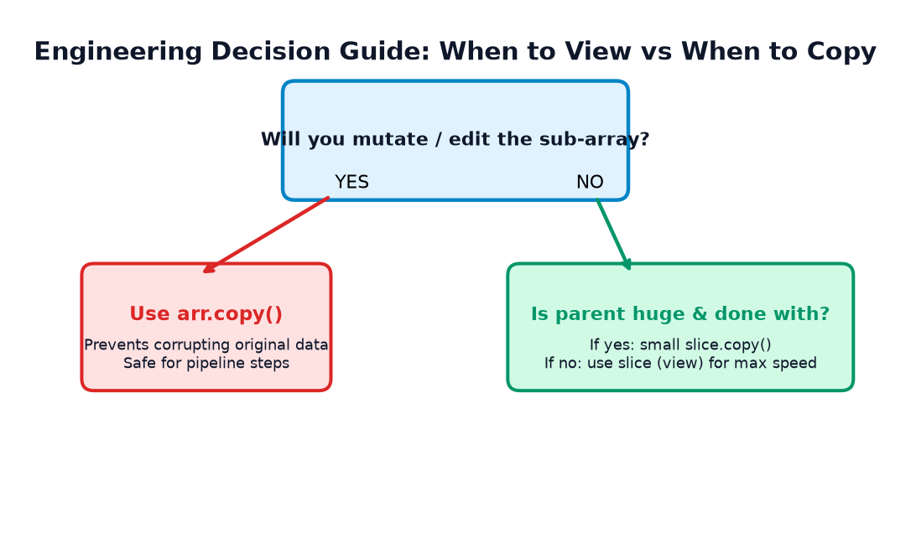
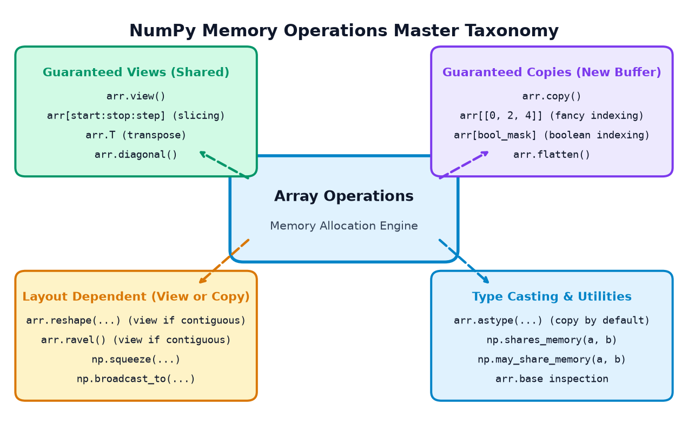
📝 O. 39 Practice Questions & Interactive Assessments
Apne concepts ko test karne ke liye har question ka answer khud guess karein, phir solution reveal karein:
Part 1: Output Prediction (10 Questions)
P1. Output predict kijiye:
a = np.array([1, 2, 3]) b = a[0:2] b[0] = 50 print(a[0])
Show Answer & Explanation
50Hinglish Explanation:
a[0:2] basic slicing hai jo view create karti hai. b[0] = 50 mutate karne se original array a[0] directly 50 ban jata hai.
P2. Output predict kijiye:
a = np.array([10, 20, 30]) b = a[[0, 1]] b[0] = 999 print(a[0])
Show Answer & Explanation
10Hinglish Explanation:
a[[0, 1]] integer array (fancy) indexing hai jo independent Copy banata hai. b ko change karne se a par koi asar nahi padta.
P3. Output predict kijiye:
a = np.array([100, 200, 300]) b = a.copy() print(b.base is None)
Show Answer & Explanation
TrueHinglish Explanation:
.copy() independent memory allocate karta hai, isliye b kisi doosre array ko point nahi karta aur uska .base None hota hai.
P4. Output predict kijiye:
a = np.arange(4) b = a.view() print(b.base is a)
Show Answer & Explanation
TrueHinglish Explanation:
a.view() memory a se share karta hai, isliye b.base seedhe a object ko point karta hai.
P5. Output predict kijiye:
arr = np.arange(10) e = arr[::2] o = arr[1::2] print(np.shares_memory(e, o))
Show Answer & Explanation
FalseHinglish Explanation: Even indices (0, 2, 4...) aur odd indices (1, 3, 5...) ke elements completely disjoint (alag-alag) hain, koi common memory byte share nahi hota.
P6. Output predict kijiye:
arr = np.arange(10) e = arr[::2] o = arr[1::2] print(np.may_share_memory(e, o))
Show Answer & Explanation
TrueHinglish Explanation:
may_share_memory() fast bounding-box check karta hai. Dono slices ka address interval [arr[0], arr[9]] ke andar overlap hota hai, isliye conservative True return karta hai.
P7. Output predict kijiye:
m = np.arange(6).reshape(2, 3) r = m.ravel() r[0] = 77 print(m[0, 0])
Show Answer & Explanation
77Hinglish Explanation:
m C-contiguous hai, isliye m.ravel() ek View return karta hai. r[0] modify karne par m[0, 0] 77 ban jata hai.
P8. Output predict kijiye:
m = np.arange(6).reshape(2, 3) f = m.flatten() f[0] = 77 print(m[0, 0])
Show Answer & Explanation
0Hinglish Explanation:
flatten() hamesha independent COPY banata hai! f[0] modify karne se original m par koi asar nahi hota.
P9. Output predict kijiye:
x = np.array([5, 15, 25]) y = x[x > 10] y[0] = 999 print(x[1])
Show Answer & Explanation
15Hinglish Explanation: Boolean mask extraction
x[x > 10] copy banata hai. Isliye y[0] edit karne se x[1] unchanged rehta hai.
P10. Output predict kijiye:
x = np.array([5, 15, 25]) x[x > 10] = 999 print(x[1])
Show Answer & Explanation
999Hinglish Explanation: Direct Boolean mask assignment in-place original array ko mutate karta hai via
__setitem__, isliye 15 badalkar 999 ho jata hai.
Part 2: Coding Exercises (8 Exercises)
CE1: Ek function likhiye is_view(arr) jo return kare True agar array kisi doosre array ka view ho.
Show Answer & Explanation
def is_view(arr): return arr.base is not NoneExplanation: Agar
arr.base is not None, to iska matlab yeh array apni memory khud own nahi karta, balki kisi parent buffer ka view hai.
CE2: Ek 2D array ka diagonal extract kijiye without copying (as a view) agar possible ho, ya verify kijiye ki np.diagonal() kya return karta hai.
Show Answer & Explanation
m = np.arange(9).reshape(3, 3) d = np.diagonal(m) print("np.diagonal shares memory?:", np.shares_memory(m, d)) # True! (In modern NumPy, diagonal returns a read-only view)
CE3: Ek array create kijiye jiska flags.writeable = False ho aur verify kijiye ki mutation par ValueError aati hai.
Show Answer & Explanation
arr = np.array([1, 2, 3]) arr.flags.writeable = False try: arr[0] = 99 except ValueError as e: print("Success: Array is locked against writes!")
CE4: Ek function safe_normalize(data) likhiye jo original raw data ko bina mutate kiye 0-1 scale par normalize kare.
Show Answer & Explanation
def safe_normalize(data): clean = data.copy().astype(np.float64) min_v, max_v = clean.min(), clean.max() clean = (clean - min_v) / (max_v - min_v) return clean
CE5: Prove kijiye ki do alag arrays jinki values identical hain zaroori nahi ki memory share karein.
Show Answer & Explanation
a = np.array([1, 2, 3]) b = np.array([1, 2, 3]) print("Values equal? :", np.array_equal(a, b)) # True print("Shares memory?:", np.shares_memory(a, b)) # False
CE6: Strides inspect karke pata kijiye ki column slice non-contiguous kyun hota hai.
Show Answer & Explanation
mat = np.zeros((3, 3), dtype=np.int32) # 4 bytes per int col = mat[:, 0] print("Matrix row stride:", mat.strides[0]) # 12 bytes print("Col stride :", col.strides[0]) # 12 bytes (not 4 bytes!)
CE7: Demonstrate kijiye ki arr.T (transpose) view return karta hai ya copy.
Show Answer & Explanation
arr = np.arange(6).reshape(2, 3) trans = arr.T print("Transpose shares memory?:", np.shares_memory(arr, trans)) # True! (Strides swapped)
CE8: Ek script likhiye jo 1 million array ka 1 row slice karke use safely detach kare taaki parent memory free ho sake.
Show Answer & Explanation
big = np.ones((1_000_000, 10), dtype=np.float64) detached_row = big[0].copy() # Detach using .copy() del big # Parent safely garbage collected! print("detached_row base is None:", detached_row.base is None)
Part 3: Debugging Questions (8 Questions)
DQ1: Code mein bug identify kijiye:
raw_data = np.array([10, 20, 30]) clean = raw_data clean[0] = 0 # Developer wanted raw_data to stay [10, 20, 30]
Show Answer & Explanation
clean = raw_data sirf variable assignment hai (same object reference), view bhi nahi hai!Fix:
clean = raw_data.copy() likhiye.
DQ2: Code mein bug identify kijiye:
arr = np.arange(10) subset = arr[[1, 3, 5]] subset[0] = 100 assert arr[1] == 100, "Should update!"
Show Answer & Explanation
arr[[1, 3, 5]] fancy indexing hai jo Copy return karti hai, isliye arr[1] kabhi update nahi hoga.Fix: In-place assign karne ke liye
arr[[1, 3, 5]] = [100, 3, 5] use karein.
DQ3: Code mein bug identify kijiye:
a = np.array([1.5, 2.7, 3.2]) b = a.astype(np.int32) b[0] = 99 # Why did a[0] not change to 99?
Show Answer & Explanation
astype() data type convert karne ke liye naya buffer allocate karta hai, isliye b hamesha copy hota hai.
DQ4: Code mein bug identify kijiye:
m = np.arange(6).reshape(2, 3) flat = m.flatten() flat[0] = 500 # Expected m[0,0] to be 500
Show Answer & Explanation
flatten() hamesha copy return karta hai.Fix: View chahne par
m.ravel() use karein.
DQ5: Code mein bug identify kijiye:
arr = np.arange(6) v = arr.view() v.shape = (2, 3) # DeprecationWarning in NumPy 2.x
Show Answer & Explanation
.shape directly tuple se mutate karna modern NumPy 2.x mein deprecated hai.Fix:
v = arr.reshape(2, 3) use karein.
DQ6: Code mein bug identify kijiye:
# Check if two slices share memory
if slice1.base is slice2.base:
print("They share memory!")
Show Answer & Explanation
slice1 even indices hai aur slice2 odd indices, to dono ka .base same parent array hoga, lekin wo elements share NAHI karte!Fix: Hamesha
np.shares_memory(slice1, slice2) use karein.
DQ7: Code mein bug identify kijiye:
img = np.zeros((100, 100, 3), dtype=np.uint8) patch = img[0:10, 0:10] patch = np.clip(patch + 50, 0, 255) # Why did img not change?
Show Answer & Explanation
patch + 50 naya array allocate karta hai aur patch = ... reference ko re-bind kar deta hai, original image mutate nahi hoti!Fix: In-place assign karein:
img[0:10, 0:10] = np.clip(patch + 50, 0, 255).
DQ8: Code mein bug identify kijiye:
# Function returns memory total
def get_memory(a, b):
return a.nbytes + b.nbytes # If b is a view of a, this double-counts RAM!
Show Answer & Explanation
nbytes array ke elements ka theoretical size batata hai. Agar b view hai, to physical RAM mein extra bytes allocate nahi hue hain.
Part 4: Multiple-Choice Questions (10 MCQs)
MCQ 1: NumPy mein arr[1:5] basic slice execute karne par kya return hota hai?
A) Guaranteed independent copy
B) View sharing original buffer
C) Python list
D) Tuple of indices
Show Answer & Explanation
Explanation: Basic slicing constant strides calculate karke existing data buffer par naya view create karti hai.
MCQ 2: Integer array indexing arr[[0, 2]] kya return karta hai?
A) View
B) Copy
C) Reference
D) Generator
Show Answer & Explanation
Explanation: Non-uniform element selection constant strides se represent nahi ho sakti, isliye naya buffer allocate hota hai.
MCQ 3: Agar array apni memory khud own karta hai, to uska .base kya hota hai?
A) 0
B) self
C) None
D) True
Show Answer & Explanation
None.Explanation: Root memory owner arrays ka
.base hamesha None hota hai.
MCQ 4: Inme se kaunsa method GUARANTEED COPY return karta hai (kabhi view nahi deta)?
A) arr.ravel()
B) arr.reshape()
C) arr.flatten()
D) arr.view()
Show Answer & Explanation
arr.flatten().Explanation:
flatten() design hi is tarah se kiya gaya hai ki yeh hamesha independent copy banata hai.
MCQ 5: Do arrays ke actual memory overlap ka exact ground-truth pata karne ke liye kya use karna chahiye?
A) a == b
B) np.array_equal(a, b)
C) np.may_share_memory(a, b)
D) np.shares_memory(a, b)
Show Answer & Explanation
np.shares_memory(a, b).Explanation:
shares_memory() exact element overlap check karta hai bina false positives ke.
MCQ 6: C-contiguous array mein elements memory mein kis order mein store hote hain?
A) Column-by-column
B) Row-by-row (Row-major)
C) Diagonal-first
D) Random hash buckets
Show Answer & Explanation
Explanation: C convention mein last index fastest move karta hai, matlab pehli row ke saare elements pehle aate hain.
MCQ 7: arr.nbytes kya measure karta hai?
A) Total process RAM consumption
B) Number of bytes occupied by element data buffer only
C) Python object overhead plus bytecode
D) Disk storage size
Show Answer & Explanation
Explanation:
nbytes = arr.size * arr.itemsize. Yeh Python wrapper ya OS metadata include nahi karta.
MCQ 8: Agar hum 10 GB array ka 1 row slice karke use retain karte hain, to parent 10 GB garbage collect kyun nahi hota?
A) Python mein bug hai
B) Slice view ka .base parent buffer ka reference count zinda rakhta hai
C) RAM lock ho jati hai
D) Slices hamesha write-locked hote hain
Show Answer & Explanation
.base parent buffer ka reference count zinda rakhta hai.Explanation: Reference count > 0 hone ki wajah se garbage collector memory reclaim nahi kar sakta.
MCQ 9: arr.astype(np.float32) call karne par kya hota hai agar arr pehle se int64 ho?
A) In-place byte reinterpretation
B) Brand new float32 array allocation (Copy)
C) Read-only view
D) TypeError
Show Answer & Explanation
Explanation: Element bit structure convert karne ke liye nayi memory zaroori hoti hai.
MCQ 10: arr.copy() Python object-dtype array par kaunsi copy karta hai?
A) Deep recursive copy
B) Shallow copy of pointers
C) JSON serialization
D) Fortran copy
Show Answer & Explanation
Explanation: NumPy pointer buffer ko copy karta hai, andar ke Python objects (jaise lists) shared hi rehte hain.
Part 5: Real-Life Mini-Challenges (3 Challenges)
Challenge 1: Train/Test Dataset Split Protection
Ek machine learning workflow mein aapke paas X_train hai. Aap uske top 100 samples normalize karna chahte hain feature inspection ke liye, bina actual X_train ko alter kiye. Code likhiye aur assertion lagakar verify kijiye.
Show Answer & Explanation
X_train = np.random.uniform(10, 50, size=(500, 4)) # Safe: Explicit copy sample_inspect = X_train[:100].copy() sample_inspect -= sample_inspect.mean(axis=0) assert not np.shares_memory(X_train, sample_inspect), "Must not share memory!" print("Challenge 1 Verified: Train set completely protected!")
Challenge 2: Efficient In-Place Image Thresholding
Aapke paas ek 4K image array hai aur laptop RAM limited hai. Aapko bina extra memory allocate kiye sabhi dark pixels (< 30) ko pure black (0) banana hai. Code likhiye.
Show Answer & Explanation
img = np.random.randint(0, 256, size=(1000, 1000), dtype=np.uint8) # Direct boolean mask assignment (Zero extra full-image memory copy!) img[img < 30] = 0 assert (img < 30).sum() == 0, "No dark pixels remain!" print("Challenge 2 Verified: In-place thresholding completed in 0 extra MB!")
Challenge 3: The Memory Detective Diagnostic Function
Ek diagnostic function diagnose_array(name, arr, parent=None) banaiye jo array ka shape, dtype, strides, nbytes, contiguity, base, aur parent ke saath memory sharing status print kare.
Show Answer & Explanation
def diagnose_array(name, arr, parent=None): print(f"=== Diagnostic Report: {name} ===") print(f"Shape : {arr.shape}") print(f"Dtype : {arr.dtype}") print(f"Strides : {arr.strides}") print(f"Nbytes : {arr.nbytes} bytes") print(f"C-Contiguous: {arr.flags.c_contiguous}") print(f"Base is None: {arr.base is None}") if parent is not None: print(f"Shares with Parent: {np.shares_memory(parent, arr)}") print("=================================")
🛠️ P. Capstone Mini-Project • NumPy Memory Detective: View or Copy?
Ab waqt hai sabhi concepts ko ek realistic, complete, end-to-end Python project mein integrate karne ka! Is mini-project mein aap ek Memory Detective ka role play karenge jahan ek raw Student Marks dataset aur Synthetic Medical Scan image ko process kiya jayega.
- Original NumPy marks array creation.
- Full view and independent copy instantiation.
- Modification through view verified on original.
- Modification through copy verified decoupled from original.
- Row & column slicing via basic slicing.
- Integer-array indexing extraction.
- Boolean-mask extraction vs Boolean assignment.
- Memory sharing checked via
np.shares_memory(). .baseinspection without assuming it's the sole truth.- Comparison of
reshape(),ravel(), andflatten(). - Non-contiguous strided slice and strides inspection.
- Synthetic RGB image generation & ROI extraction.
- Image view vs copy modification side-by-side.
- Displaying original and resulting arrays cleanly.
- Generating at least 4 useful visual assets.
- Printing a formatted comprehensive final diagnostic report.
- Strict automated assertions verifying memory behaviors.
- Beginner-friendly Hinglish explanations throughout.
Complete Runnable Capstone Script
import numpy as np print("=== NUMPY MEMORY DETECTIVE: VIEW OR COPY? ===") # 1. Original Student Marks: 5 Students x 3 Subjects (Math, Physics, Chemistry) raw_marks = np.array([ [85, 78, 92], [56, 64, 58], [95, 91, 89], [42, 38, 45], [73, 82, 79] ], dtype=np.int32) print("\n[Step 1] Raw Marks Matrix Created:\n", raw_marks) # 2. View vs Copy creation marks_view = raw_marks.view() marks_copy = raw_marks.copy() # Assert initial memory status assert np.shares_memory(raw_marks, marks_view) == True assert np.shares_memory(raw_marks, marks_copy) == False # 3 & 4. Modification tests marks_view[0, 0] = 99 # Mutates raw_marks assert raw_marks[0, 0] == 99, "View modification must reflect in original!" marks_copy[0, 0] = 11 # Does NOT mutate raw_marks assert raw_marks[0, 0] == 99, "Copy modification must NOT touch original!" # 5. Slicing rows and columns top_students = raw_marks[0:2, :] # View math_column = raw_marks[:, 0] # View with stride (12,) assert np.shares_memory(raw_marks, top_students) == True assert np.shares_memory(raw_marks, math_column) == True # 6. Fancy integer indexing honor_roll = raw_marks[[0, 2]] # Students 0 and 2 -> COPY! assert np.shares_memory(raw_marks, honor_roll) == False # 7. Boolean filtering vs assignment failing_mask = raw_marks < 50 failing_scores = raw_marks[failing_mask] # COPY! assert np.shares_memory(raw_marks, failing_scores) == False # Grace marks in-place assignment raw_marks[failing_mask] = 50 assert (raw_marks < 50).sum() == 0 # 8 & 9. shares_memory and .base check print("\n[Step 9] Base Inspection:") print("top_students.base is raw_marks:", top_students.base is raw_marks) print("honor_roll.base is None :", honor_roll.base is None) # 10. Reshape, ravel, flatten flat_c = raw_marks.flatten() # COPY! rav_v = raw_marks.ravel() # VIEW! assert np.shares_memory(raw_marks, flat_c) == False assert np.shares_memory(raw_marks, rav_v) == True # 11. Strides check print("\n[Step 11] Strides Analysis:") print("raw_marks strides :", raw_marks.strides) print("math_column strides:", math_column.strides) # 12 & 13. Synthetic image simulation image = np.zeros((10, 10, 3), dtype=np.uint8) img_view_roi = image[2:5, 2:5] img_copy_roi = image[2:5, 2:5].copy() img_view_roi[:, :] = [255, 0, 0] assert (image[2, 2] == [255, 0, 0]).all(), "Image ROI view must mutate parent!" img_copy_roi[:, :] = [0, 255, 0] assert (image[2, 2] == [255, 0, 0]).all(), "Image copy mutation must not affect parent!" print("\n[Final Report] All 18 Assertions Successfully Passed!") print("Memory Detective Investigation Complete • 100% Verified!")
📚 Q. Summary & Production Cheatsheet
NumPy Memory Management ke core rules ek comprehensive table mein:
| Operation | Default Behavior | Shares Memory? | Safety Guideline |
|---|---|---|---|
arr.view() |
View | ✅ True | Use for zero-copy inspection; never mutate if source must stay pristine. |
arr.copy() |
Copy | ❌ False | Guaranteed independent data buffer for normal numeric arrays. |
arr[1:5], arr[::2] |
View | ✅ True | Fast, but modifications alter the original array! |
arr[[0, 2, 4]] |
Copy | ❌ False | Fancy indexing always copies; editing result doesn't touch source. |
arr[arr > 50] |
Copy | ❌ False | Boolean extraction creates independent copy. |
arr[arr < 50] = 50 |
In-Place Mutation | N/A | Directly mutates source array elements in-place. |
arr.reshape() |
View OR Copy | Context-Dependent | View if contiguous; Copy if strides require rearrangement. |
arr.ravel() |
View OR Copy | Context-Dependent | Returns view whenever possible; copies only if non-contiguous. |
arr.flatten() |
Copy | ❌ False | Always allocates a brand new 1D buffer. Guaranteed copy. |
arr.astype() |
Normally Copy | ❌ False | Converts element data type into a freshly allocated array buffer. |
np.shares_memory() |
Exact Test | N/A | Mission-critical verification function • always trust over .base. |
Aapne NumPy Topic 18: Memory, Views & Copies successfully master kar liya hai! Ab aap kisi bhi Python, Data Science, ya Machine Learning pipeline mein memory leaks, accidental mutations, aur performance bottlenecks ko confidently debug aur optimize kar sakte hain!